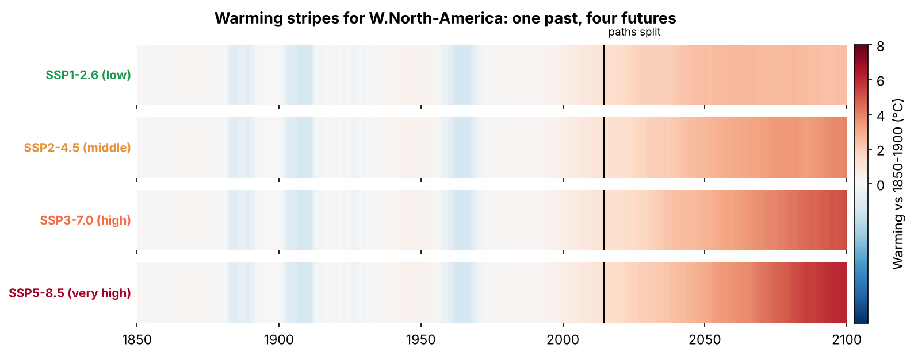
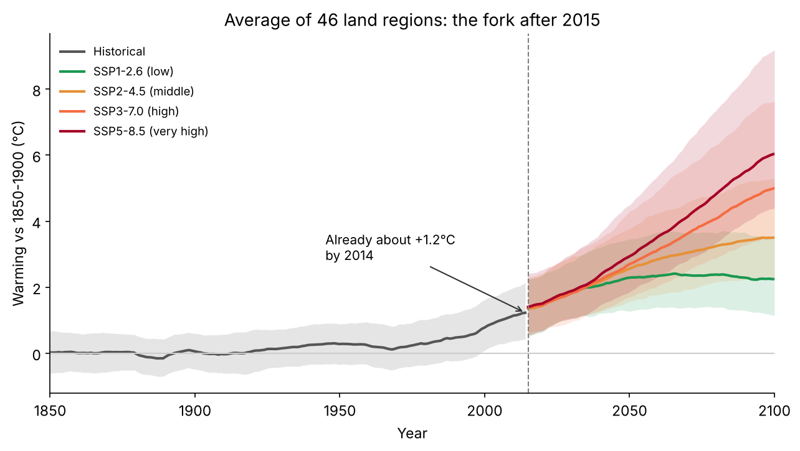
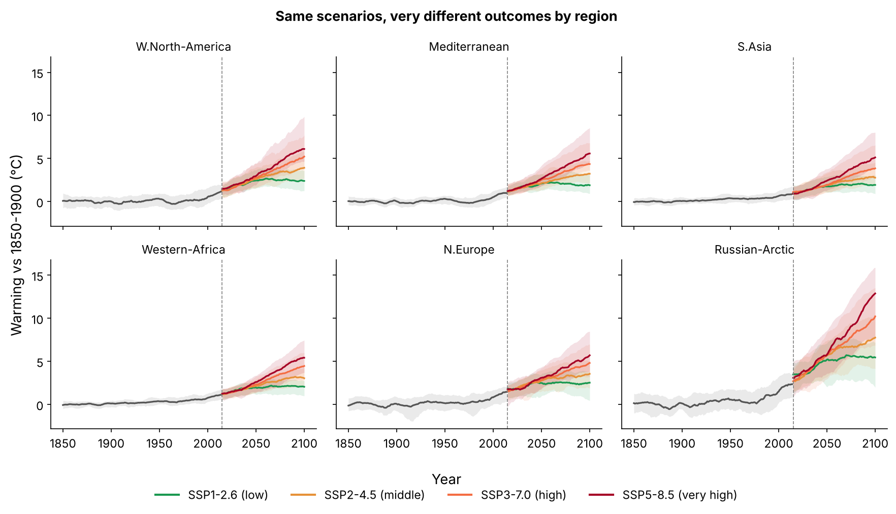

How much hotter will your part of the world get, and how much of that is still up to us?
Chaylen Nguyen-Tran, Jeffrey Kang, Peter Little, Jayleen Shang
Dataset
We're sticking with CMIP6, the climate model dataset we used for Project 3. It comes from NOAA's public bucket
on Google Cloud and has simulations from climate models built by research groups all over the world, all run
under the same set of scenarios.
Here's the part of it we're using:
Variable: near-surface air temperature (tas), monthly. If we have time, we might add precipitation (pr) too.
Time and scenarios: the historical runs (1850 to 2014), plus four future scenarios that go to 2100: SSP1-2.6, SSP2-4.5, SSP3-7.0, and SSP5-8.5.
Models: 7 models that have all five of those runs: ACCESS-CM2, CanESM5, GFDL-ESM4, IPSL-CM6A-LR, MIROC6, MPI-ESM1-2-LR, and MRI-ESM2-0.
Regions: the 46 IPCC land regions, and maybe a few cities using the closest grid cell.
The raw data is way too big for a browser, so we shrank it down first. We averaged the monthly data into yearly
values, averaged the grid cells inside each region (weighted by latitude), and measured everything as warming
compared to 1850-1900. Then we used the median of the 7 models as the main line, kept the min and max as the
uncertainty range, and smoothed it over 10 years. All of that ends up in one CSV that D3 can load
(preprocessing.ipynb).
What we intend to do
For the final project, we want to turn our Project 3 chart into an explorable explanation: basically a
scrolling article where the charts change as you read.
The story goes like this. The world has already warmed, and every region has the same history up to now. But
after 2015, the future splits depending on how much we keep emitting, and the gap is big. In some regions, the
worst-case scenario means almost 6°C more warming than the best case. So the choices we make now decide when
(or if) a place crosses lines like +2°C.
To make it personal, readers pick their own region at the start, and the rest of the charts follow that choice.
We're planning a map with a year slider, buttons to turn scenarios on and off, a threshold slider for seeing
when a region hits +2°C, and hover tooltips that show the range across models. Project 3 was one chart; this
time we want it to feel like a story with a clear takeaway at the end.
Static visualizations
All six use our processed CMIP6 data (7-model median, warming vs 1850-1900). Each maps to a step in the story.
Code: static_figures.py.
1. Warming stripes: one past, four futures
Each stripe is one year in Western North America, colored by warming, and the rows split by scenario after 2015.

2. The fork after 2015
Land regions have already warmed about 1.2°C, and by 2100 the paths range from about 2°C to 6°C.

3. Same scenarios, different regions
Under the same scenarios, Arctic and northern regions warm far more than the tropics.

4. When do thresholds arrive?
In Western North America, +3°C never arrives by 2100 under SSP1-2.6, but +4°C arrives in the 2060s under SSP5-8.5.
5. The cost of the path
Taking the very high path instead of the low path adds about 1.8°C to 6°C of late-century warming, depending on the region.
6. How fast it is warming
Warming speeds up from about 0.16°C per decade historically to 0.23 to 0.49°C per decade by 2060, depending on the path.